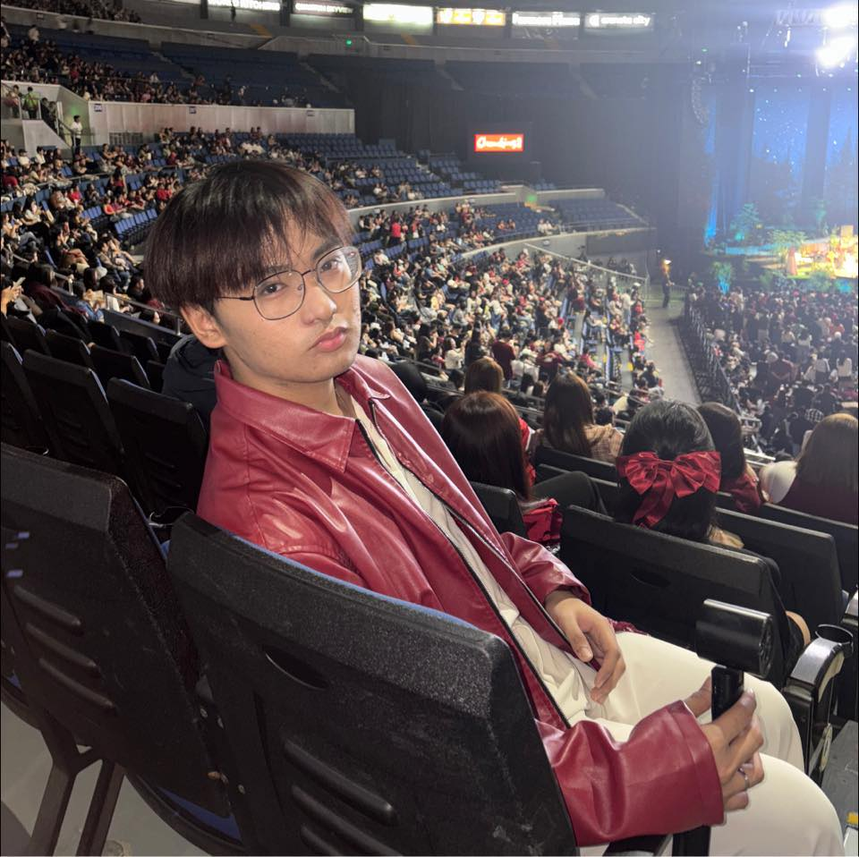

Computer Science Student | CMSC 100
Hi! My name is Jeoff Nathaniel M. Conde, and I am currently a Sophomore student taking BS Computer Science.
This project's specific goal is to identify the best affordable and nutrient-dense meal combination that will meet each person's unique nutritional needs. The problem is expressed as a linear program with the goal of meeting limitations and minimizing costs while still meeting nutritional needs. We incorporate dietary restrictions that control the quantity of calories and the proportions of fats, cholesterol, sodium, vitamins, and minerals.
Superautopets is a game where two players separately assemble a team of pets. Each of the pets is selected for their unique abilities in preparation for battle against another team of pets. The game provides a shop that contains a collection of animals (“main collection”) that players can choose to buy from. A player of Superautopets starts with 10 gold, 10 hearts, 0 trophies, and a turn/round counter of 0. Once a player joins the game, a name is assigned to his/her team and the turn count is set to 1. Initially, the players collection of animals/pets (also called “party”) is empty. The player can add at most 5 pets to his/her party.
My abilities, in my opinion, are more centered on perseverance in learning; even if I struggle with a foreign program language, particularly early in the course, I am not very good at quickly adjusting to new situations. However, I have discovered that I am genuinely committed to improving my performance and want to learn as much as I can. That, in my opinion, is the secret to being able to learn everything, particularly for every course that uses a different programming language, like the CMSC 100 one we are using right now.
I would rather provide ten facts about myself because I have already introduced myself: (1) I am a student of computer science. (2) I enjoy watching American, Filipino, Chinese, and Korean television shows and films. (3) I'm an introvert. (4) Capricorn is my zodiac sign. (5) I learn best visually. (6) I love NIKI, and "Did You Like Her in the Morning?" is one of my favorite songs by her. (7) I am more of a follower than a leader. (8) Santa Rosa, Laguna, is my hometown. (9) I'm single. (10) And lastly, I'm crushing on a student in computer science (a sophomore one).